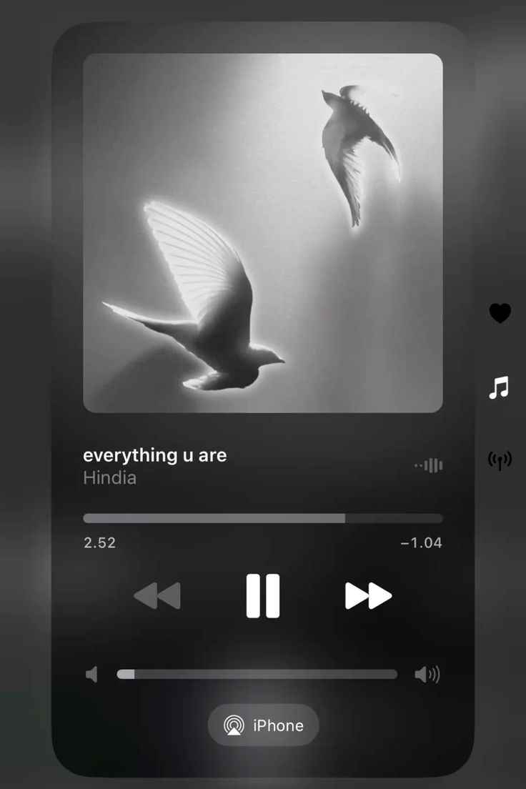
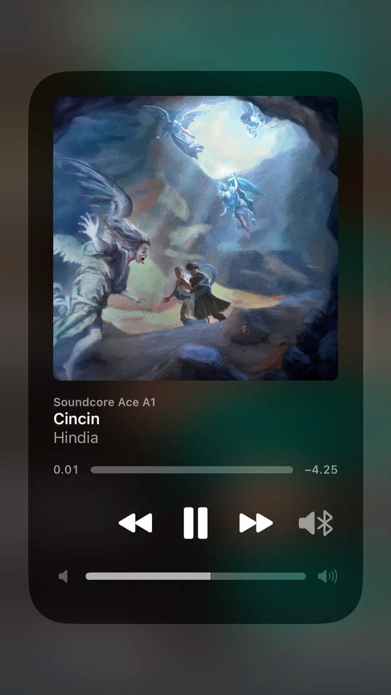
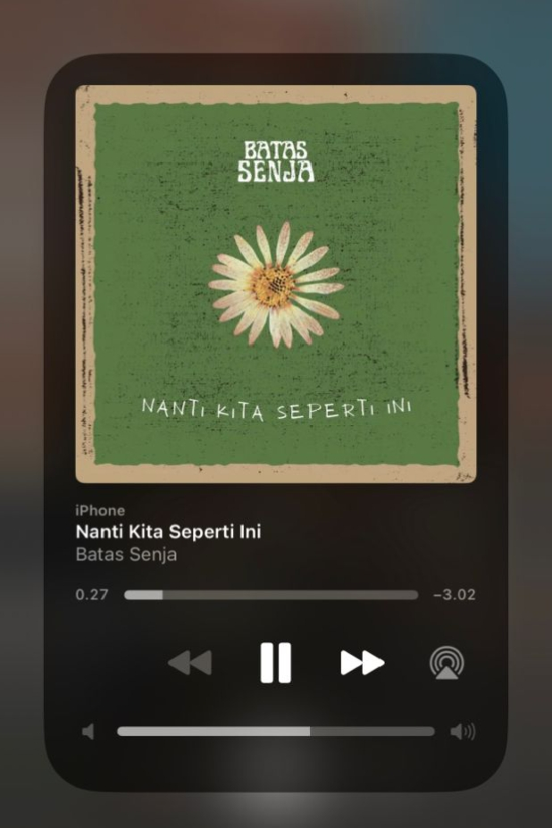

TOP 5 HAL TENTANG GW
- SEDERHANA
- PINTAR (kalo mood belajar)
- PEKERJA KERAS
- JUJUR (pake banget)
- KREATIF (jelass)
About Me
Perkenalkan saya Rafi lahir tanggal 20 April 2009. Saya adalah seorang yang menyukai tantangan dan selalu bersemangat dalam mempelajari hal-hal baru. Selain itu, saya juga sangat menikmati ayam goreng dan berbagai kuliner lainnya.
20 April 2009
Indonesia
Ayam Goreng Lover
MY FAVORITE SONGS

Hindia - Everything u are

Hindia - Cincin
